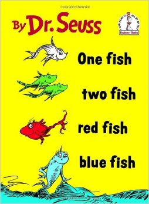

ReefFish <- read.csv(file = "ReefFish.csv", header = T)Reorganización de datos
Aprender cómo formatear datos es una habilidad esencial que te permitirá producir fácilmente gráficos y ejecutar análisis. Siempre debes buscar que los datos estén formateados de manera que cada observación sea una fila y cada variable sea una columna (consulta la ayuda sobre Entrada de datos). Sin embargo, para algunos tipos de variables, hay decisiones que debes tomar sobre cómo ingresar los datos.
Por ejemplo, es muy común en las ciencias biológicas que registremos la abundancia de muchas especies de organismos en cada una de nuestras observaciones de replicación (transectos, cuadrantes, encuestas, etc.). Luego, tenemos dos opciones para ingresar esos datos: 1. Una columna separada para cada especie que registre su abundancia. 2. Dos columnas: una que identifique la especie y otra que registre la abundancia.

Considera un conjunto de datos que registra la abundancia de peces en cada uno de tres transectos que se establecieron en dos arrecifes en dos meses diferentes. Primero, importa este conjunto de datos de muestra, ReefFish.csv, para ver cómo está formateado.
Site Month Transect Species Abundance
1 Reef1 January 1 RedFish 4
2 Reef1 January 1 BlueFish 5
3 Reef1 January 1 BlackFish 10
4 Reef1 January 2 RedFish 42
5 Reef1 January 2 BlueFish 13
6 Reef1 January 3 RedFish 3Este marco de datos está organizado en un formato largo con una variable que identifica la especie de pez y otra variable que contiene los datos de abundancia. Las otras tres variables identifican cada transecto (Sitio, Mes y Transecto).
Este formato es eficiente para la entrada de datos, ya que solo necesitas tener filas para las especies que estuvieron presentes en ese transecto en particular, y no tienes que seguir agregando columnas cada vez que se registre una nueva especie. Necesitarías los datos en este formato si quisieras utilizar un gráfico para contrastar la abundancia de peces entre las tres especies.
Sin embargo, si deseas contrastar la abundancia de una de las especies o crear una matriz de especies por muestra que se requiere en los diversos análisis multivariados que contrastan la composición de especies, los datos deberán manipularse de alguna manera.
Afortunadamente, hay paquetes muy útiles en R que hacen esto posible. Si alguna vez has utilizado tablas dinámicas en Excel, hacen cosas similares.
Transformar de formato largo a formato ancho
En este ejemplo, utilizaremos el paquete tidyr para convertir este marco de datos a un formato ancho que permitirá una exploración adicional de los datos. Primero, instala y carga el paquete.
library(tidyr)Para convertir este conjunto de datos en un formato amplio con una columna separada para cada especie de pez, utilizamos la función pivot_wider().
ReefFish.wide <- pivot_wider(ReefFish,
names_from = Species,
values_from = Abundance,
values_fill = 0)Los argumentos de pivot_wider son: * El data frame que deseas convertir (en este caso, ReefFish) * La variable cuyos niveles se convertirán en nuevas columnas (en este caso, Species) * La variable que contiene los valores que llenarán las nuevas columnas (en este caso, Abundance) * values_fill=0 indica a pivot_wider que complete con cero cuando falta una especie en un transecto determinado.
# A tibble: 6 × 6
Site Month Transect RedFish BlueFish BlackFish
<chr> <chr> <int> <int> <int> <int>
1 Reef1 January 1 4 5 10
2 Reef1 January 2 42 13 0
3 Reef1 January 3 3 0 8
4 Reef2 January 1 5 0 72
5 Reef2 January 2 0 9 0
6 Reef2 January 3 24 101 65Ten en cuenta que el formato amplio de estos datos ahora tiene una columna para cada especie con todos los valores de abundancia. Obtendrías tantas columnas como niveles únicos en la columna Species. Obtendrías tantas filas como combinaciones únicas de las variables que no se están dividiendo (Sitio, Mes y Transecto en este ejemplo).
Ahora puedes graficar o analizar cualquier especie individual en relación con posibles variables predictoras como Sitio o Mes. Los análisis multivariables de la composición de especies en relación con posibles variables predictoras también requieren que cada especie esté en columnas separadas. Puedes seleccionarlas de este data frame con la función select de dplyr (ver Subsetting data).
*Ten en cuenta que si tuvieras un transecto sin observaciones de peces, necesitarías agregar una fila al conjunto de datos original, tal vez con un código de especie de “ninguna”. De lo contrario, esa observación de replicación faltaría en el formato amplio, lo cual es necesario si deseas comparar la abundancia entre arrecifes, etc.
Transformación de un formato amplio a un formato largo
La función pivot_longer convertirá los datos del formato amplio a un formato largo.
Aquí, podemos utilizar este código para obtener nuestro conjunto de datos original a partir del conjunto de datos en formato amplio que acabamos de crear.
ReefFish.long <- pivot_longer(ReefFish.wide,
cols = 4:6,
names_to = "Species",
values_to = "Abundance")# A tibble: 6 × 5
Site Month Transect Species Abundance
<chr> <chr> <int> <chr> <int>
1 Reef1 January 1 RedFish 4
2 Reef1 January 1 BlueFish 5
3 Reef1 January 1 BlackFish 10
4 Reef1 January 2 RedFish 42
5 Reef1 January 2 BlueFish 13
6 Reef1 January 2 BlackFish 0Los argumentos de pivot_longer() son: * El data frame que deseamos convertir * Los nombres de las columnas a convertir (por nombre o por número de columna) * names_to = - el nombre de la nueva variable que contendrá los nombres de las variables (en este caso, Species) * values_to = - el nombre de la nueva variable que contendrá los valores de las variables (en este caso, Abundance)
En ese código, elegimos las tres variables con los datos de especies por sus números de columna (4 a 6). También podríamos usar sus nombres o la primera y última columna en una secuencia de columnas. Por ejemplo,
ReefFish.long <- pivot_longer(ReefFish.wide,
cols = c("BlackFish", "BlueFish", "RedFish",
names_to = "Species",
values_to = "Abundance")
ReefFish.long <- pivot_longer(ReefFish.wide,
cols = BlackFish:RedFish,
names_to = "Species",
values_to = "Abundance")Hemos recreado nuestro conjunto de datos original. La única diferencia es que las filas se han ordenado y las especies que estaban ausentes de un transecto dado tienen su propia fila con un valor de abundancia de cero.
Reorganizando con reshape2
El paquete reshape2 también nos permite reorganizar datos y tiene algunas capacidades adicionales que no están presentes en tidyr.
library(reshape2)En lugar de pivot_wider, se utiliza dcast para convertir de un formato largo a ancho. Este código hará lo mismo que vimos anteriormente.
ReefFish.wide <- dcast(ReefFish,
Site + Month + Transect ~ Species,
value.var = "Abundance", fill = 0
)Los argumentos de dcast son: * El marco de datos que deseas convertir (en este caso, ReefFish) * Las variable(s) que deseas incluir sin cambios como columnas en el nuevo marco de datos están a la izquierda de ~ (Site, Month y Transect) * Las variable(s) que se están convirtiendo en nuevas columnas están a la derecha de ~ (en este caso, Species) * La variable que contiene los valores que se llenarán en las nuevas columnas (especificada por value.var, en este caso, Abundance) * fill=0 indica a dcast que rellene con ceros cuando una especie esté ausente de un transecto dado.
En lugar de pivot_longer, se utiliza melt para convertir de un formato ancho a largo.
ReefFish.long <- melt(ReefFish.wide,
id.vars = c("Site", "Month", "Transect"),
measure.vars = c("RedFish", "BlueFish", "BlackFish"),
variable.name = "Species", value.name = "Abundance"
)Los argumentos de melt son: * El marco de datos que deseamos convertir * id.vars especifica las columnas que permanecen sin cambios (aquí las variables predictoras que etiquetan cada observación repetida) * measure.vars especifica qué variables contienen los datos que irán en la nueva columna * variable.name y value.name proporcionan los nombres de la nueva columna.
Lo que reshape2 puede hacer y tidyr no puede es la capacidad de resumir datos mientras reorganizas de formato largo a ancho.
En el ejemplo anterior, solo había una fila que pertenecía a cada combinación de Site, Month y Transect. Si hay filas duplicadas para cada combinación de las variables que deseas mantener en el nuevo marco de datos (las que están a la izquierda de ~), debes indicarle a dcast cómo quieres tratar los duplicados (por ejemplo, sumarlos o calcular su media).
Por ejemplo, si quisiéramos combinar los transectos de cada estudio, podríamos eliminar Transect de la lista de variables a incluir en el nuevo marco de datos y agregar un argumento (fun.aggregate = sum) para indicarle a dcast que queremos sumar los valores de los tres transectos en cada combinación de Site/Month.
ReefFish.wide_sum <- dcast(ReefFish,
Site + Month ~ Species,
value.var = "Abundance",
fun.aggregate = sum, fill = 0
) Site Month BlackFish BlueFish RedFish
1 Reef1 February 116 15 60
2 Reef1 January 18 18 49
3 Reef2 February 42 106 18
4 Reef2 January 137 110 29Si queremos la media de los tres transectos, podemos usar fun.aggregate = mean.
ReefFish.wide_mean <- dcast(ReefFish,
Site + Month ~ Species,
value.var = "Abundance", fun.aggregate = mean, fill = 0
)También puedes incluir expresiones más complejas en la fórmula de reshape para crear nuevas variables que sean combinaciones de las antiguas. Por ejemplo, podrías crear una nueva columna para cada combinación de Especie y Mes agregando ambas variables a la derecha del ~.
ReefFish.wide_combined <- dcast(ReefFish,
Site + Transect ~ Species + Month,
value.var = "Abundance", fill = 0
) Site Transect BlackFish_January BlueFish_February BlueFish_January
1 Reef1 1 10 12 5
2 Reef1 2 0 3 13
3 Reef1 3 8 0 0
4 Reef2 1 72 0 0
5 Reef2 2 0 22 9
6 Reef2 3 65 84 101
RedFish_February RedFish_January
1 52 4
2 0 42
3 8 3
4 0 5
5 3 0
6 15 24Ayuda adicional
Escribe ?pivot_wider y ?pivot_longer para obtener ayuda en R sobre estas funciones de tidyr.
Escribe ?dcast y ?melt para obtener ayuda en R sobre estas funciones de reshape2.
Cheat sheet de manipulación de datos con dplyr y tidyr producido por Rstudio.
Data wrangling with dplyr and tidyr
Autor: Alistair Poore
Año: 2016
Última actualización: Nov. 2023